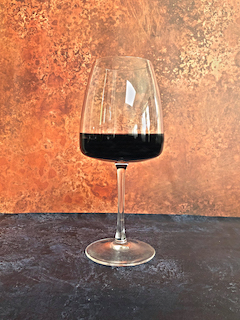
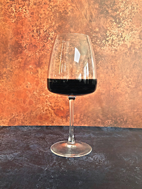

Welcome To The World Of...
Wine is a fermented alcoholic drink made from grapes and is one of the oldest alcoholic drinks known to man. It is one of the most popular alcoholic drinks with over 30million tonnes being produced all over the world. There are many different types but the majority can be classed as either Red, White or Rose wines.
 


There are two major geographical distinctions in wine classification, Old World and New World. Wine producing countries have different areas with different specialities, climate and culture can all have an impact on regional differences.
France, arguably the worlds biggest and most famous wine producing country, has many regions known for exceptional vineyards and varieties. Hover over a region to find out more -
Wine is great to drink with friends, to relax after a long day and to enjoy with food. But what about when its not?
Wine that has gone bad is often referred to as ‘corked’ and this means that a contaminant has entered the bottle. While still safe to drink the taste would be unpleasant. To tell if your wine is corked use these three easy steps
If the wine has a stranger tinge and a bad smell it could be your wine is corked. Make sure you swirl it before the sight and smell tests!
Created by Nathan Duncan